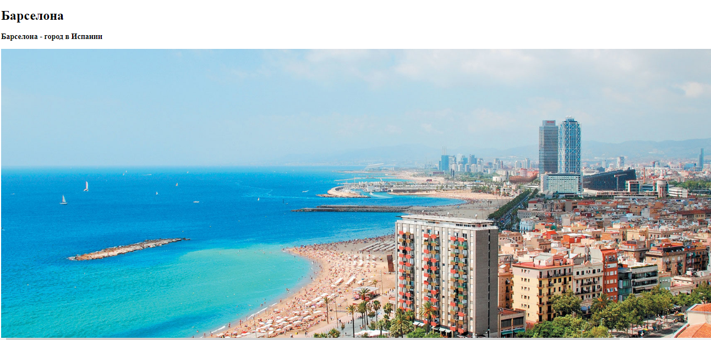
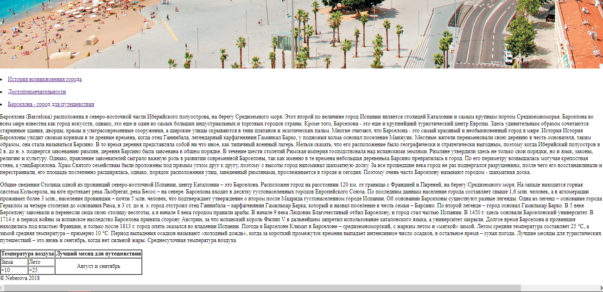

Лабораторные работы
студентки 2 курса группы 2MИ
Неберовой Дарьи
Главная страница
Лабораторная работа 1
Лабораторная работа 2
Лабораторная работа 3
Лабораторная работа 4
Контрольная работа
Java Script
Лабораторная работа 2
Лабораторная работа 3(Js)
Лабораторная работа 3.1 (Js)
Лабораторная работа 3.2 (Js)
Лабораторная работа 3.3 (Js)
Лабораторная работа 3.4 (Js)
Калькулятор
Лабораторная работа 3.5 (Js)
Лабораторная работа 3.5(2) (Js)
Лабораторная работа 1
 
Исходный текст страницы (HTML):
<!DOCTYPE html> <html> <head> <title>!DOCTYPE</title> <meta charset="utf-8"> </head> <body> <div id="b1"> <div id="b2"> <h1>Барселона</h1> <h3>Барселона - город в Испании</h3> <img src="1505919199_d09ed182d0b4d18bd185-d0b2-d091d0b0d180d181d0b5d0bbd0bed0bdd0b5.png"></img> </div> <div id="b3"> <p><li><a href="http://ourspain.ru/towns/barcelona1.html">История возникновения города</a></li></p> <p><li><a href="http://extrip.ru/spain/barcelona">Достопримечательности</a></li></p> <p><li><a href="https://ru.wikipedia.org/wiki/Барселона">Барселона - город для путешевствия</a></li></p> </div> <div id="b4"> <p>Барселона (Barcelona) расположена в северо-восточной части Иберийского полуострова, на берегу Средиземного моря. Этот второй по величине город Испании является столицей Каталонии и самым крупным портом Средиземноморья. Барселона во всем мире известна как город искусств, однако, это еще и один из самых больших индустриальных и торговых городов страны. Кроме того, Барселона - это еще и крупнейший туристический центр Европы. Здесь удивительным образом сочетаются старинные здания, дворцы, храмы и ультрасовременные сооружения, а широкие улицы скрываются в тени платанов и экзотических пальм. Многие считают, что Барселона - это самый красивый и необыкновенный город в мире. История История Барселоны уходит своими корнями в те древние времена, когда отец Ганнибала, легендарный карфагенянин Гаминкал Барко, у подножия холма основал поселение Манжуик. Местные жители переименовали свою деревню в честь основателя, таким образом, она стала называться Барсино. В то время деревня представляла собой ни что иное, как типичный военный лагерь. Нельзя сказать, что его расположение было географически и стратегически выгодным, поэтому когда Иберийский полуостров в I в. до н. э. подвергся завоеванию римлян, деревня Барсино была завоевана в общем порядке. В течение шести столетий Римская империя господствовала над испанскими землями. Римляне утвердили здесь не только свои порядки, но и язык, законы, религию и культуру. Однако, правление завоевателей сыграло важную роль в развитии современной Барселоны, так как именно в те времена небольшая деревенька Барсино превратилась в город. По его периметру возвышалась могучая крепостная стена, а улицБарселона. Храм Святого семействаы были проложены под прямым углом друг к другу, поэтому с высоты город напоминал шахматную доску. За все прошедшие века город не раз подвергался разрушениям, после чего его восстанавливали и перестраивали, его площадь постепенно расширялась, однако, порядок расположения улиц, заведенный римлянами, прослеживается в городе и сегодня. Поэтому очень часто Барселону называют городом - шахматная доска. </p> <p> Общие сведения Столица одной из провинций северо-восточной Испании, центр Каталонии – это Барселона. Расположен город на расстоянии 120 км. от границы с Францией и Пиреней, на берегу Средиземного моря. На западе находится горная система Кольсерола, на юге протекает река Льобрегат, река Бесос – на севере. Барселона входит в десятку густонаселенных городов Европейского Союза. По последним данным население города составляет свыше 1,6 млн. человек, а в агломерации проживает более 3 млн., население провинции – почти 5 млн. человек, что подтверждает утверждение о втором после Мадрида густонаселенном городе Испании. Об основании Барселоны существуют разные легенды. Одна из легенд – основание города Гераклом за четыре столетия до основания Рима, в 3 ст. до н. э. город отстроил отец Ганнибала – карфагенянин Гамилькар Барка, который и назвал поселение в честь семьи – Барсино. По второй легенде – город основал Гамилькар Барко. В 5 веке Берселону завоевали и перенесли сюда свою столицу вестготы, а в начале 8 века городом правили арабы. В начале 9 века Людовик Благочестивый отбил Барселону, и город стал частью Испании. В 1450 г. здесь основали Барселонский университет. В 1714 г. в период войны за испанское наследство Барселона приняла сторону Австрии, за что испанский король Филип V в дальнейшем запретил использование каталонского языка, а университет закрыли. Долгое время Барселона и провинция находились под властью Франции, и только после 1813 г. город опять оказался во владении Испании. Погода в Барселоне Климат в Барселоне – средиземноморский, с жарким летом и «мягкой» зимой. Летом средняя температура составляет 25 °C, а зимой средняя температура – примерно 10 °C. Период выпадения осадков называют «холодный дождь», когда за короткий промежуток времени выпадает интенсивное число осадков, в остальное время – сухая погода. Лучшие месяцы для туристических путешествий – это июнь и сентябрь, когда нет сильной жары. Среднесуточная температура воздуха </p> </div> <div id="b5"> <table border="1" > <tr> <th colspan="2"> Температура воздуха </th> <th> Лучший месяц для путешевствия </th> </tr> <tr> <td> Зима </td> <td> Лето </td> <td rowspan="2" align="center"> Август и сентябрь </td> </tr> <tr> <td> +10 </td> <td> +25 </td> </tr> </table> </div> <div id="b6"> © Neberova 2018 </div> <div id="b7"> </div> </div> </body> </html>